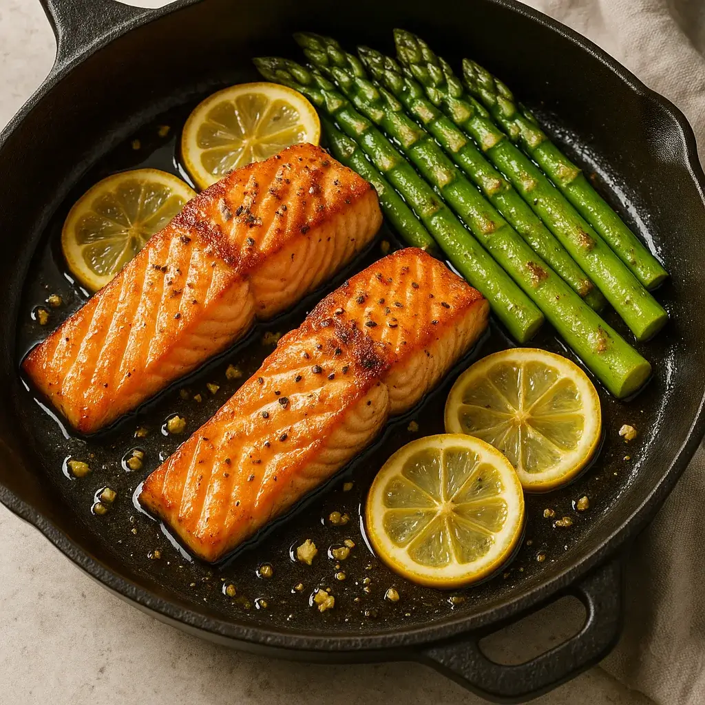
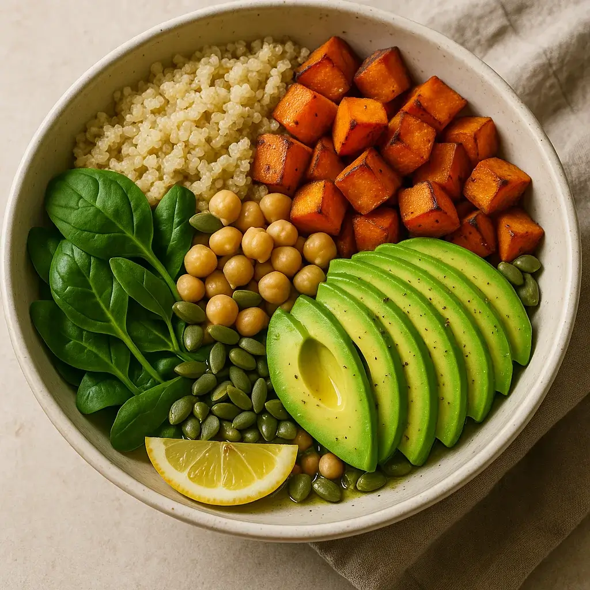
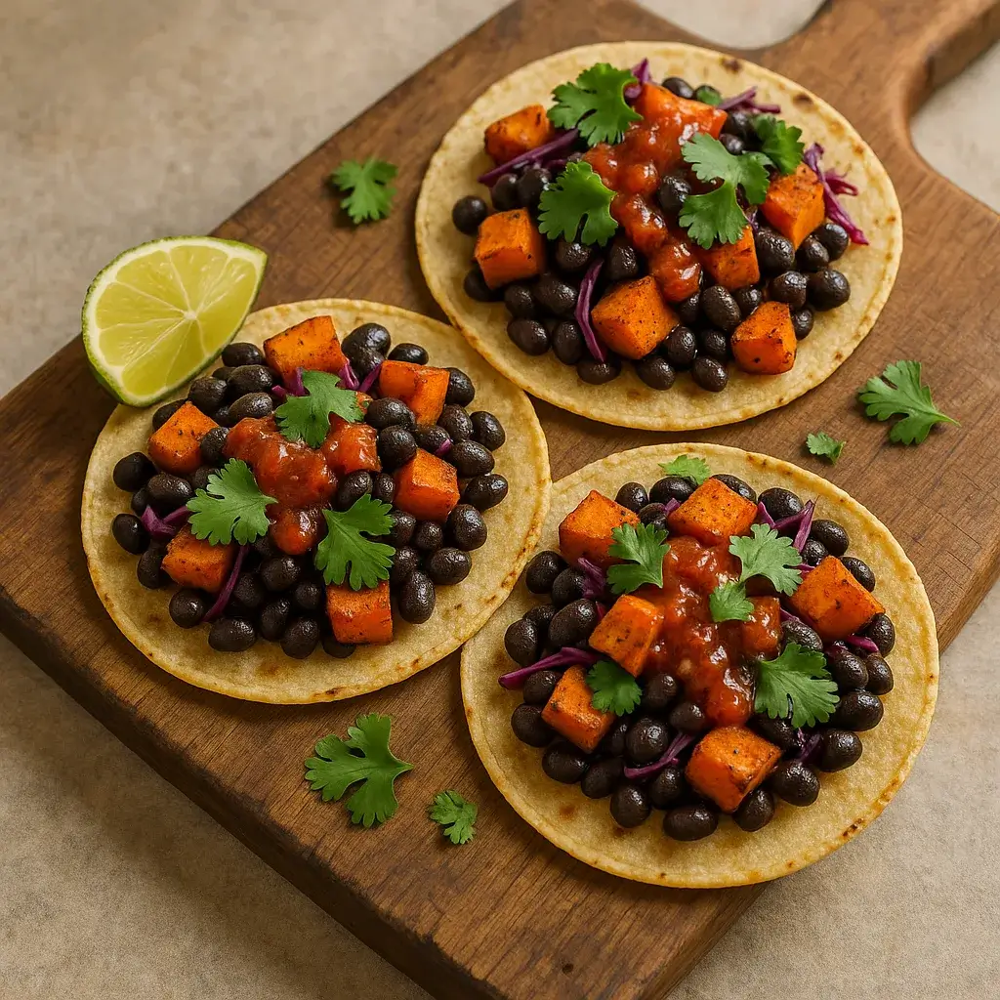
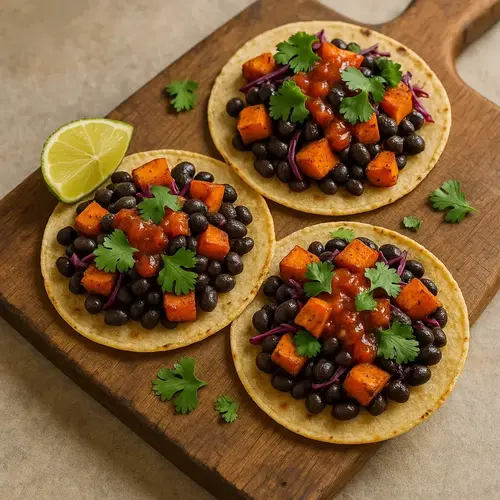
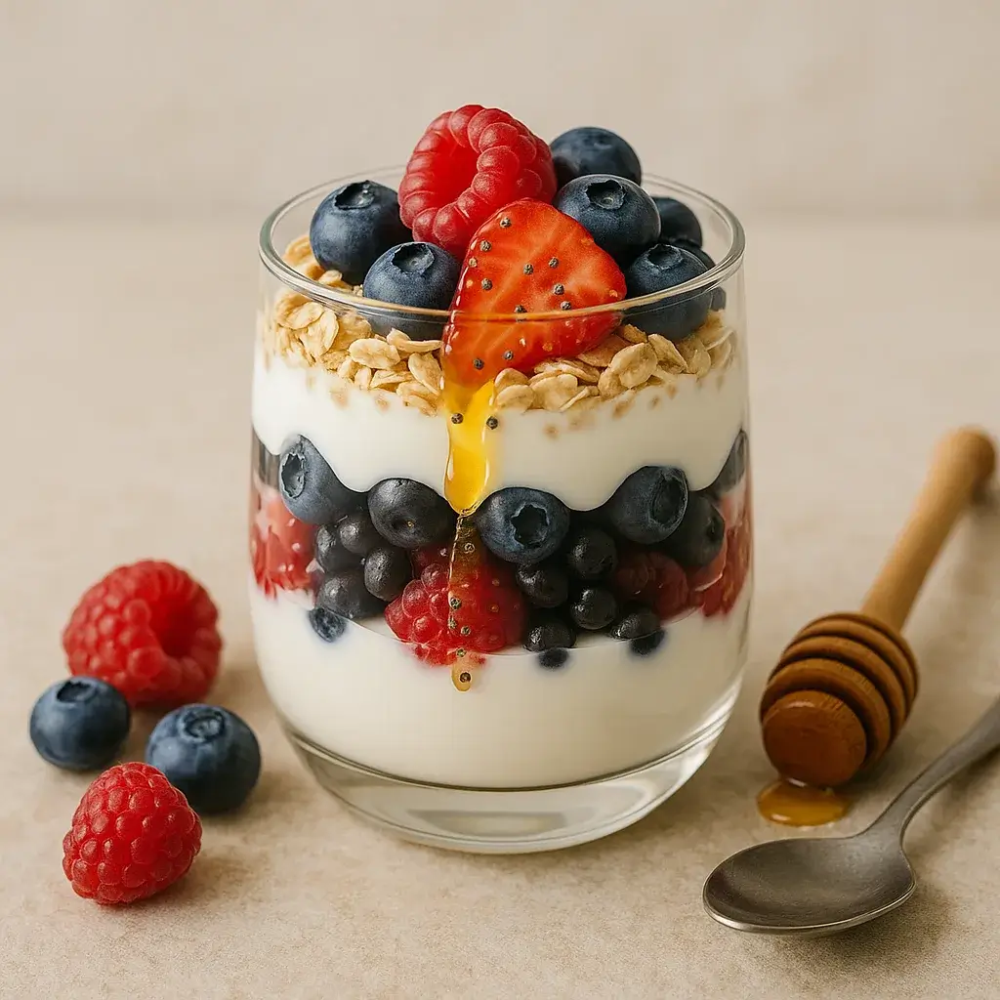

One-Pan Lemon Garlic Salmon with Asparagus
A 15-minute weeknight dinner of flaky salmon and tender asparagus.
Prep: 5 mins
Cook: 12 min
Ingredients:
- 2 salmon fillets (125 g each)
- 200 g asparagus spears, trimmed
- 1 Tbsp extra-virgin olive oil
- 2 garlic cloves, minced
- 1/2 lemon, sliced
- Sea salt & black pepper
Instructions:
- Heat a large skillet over medium-high with olive oil
- Season salmon and asparagus with salt, pepper, and minced garlic.
- Place salmon skin-side down; arrange asparagus around.
- Cook 4 min, flip salmon, add lemon slices, cook 4-5 min more until salmon is opaque.", "Serve hot with pan juices.
More recipes


Quinoa Veggie Power Bowl
A balanced bowl of fluffy quinoa, roasted veggies and healthy fats.
Prep: 10 mins
Cook: 15 min


Sweet Potato Black Bean Tacos
Smoky roasted sweet potatoes and black beans tucked into warm tortillas.
Prep: 10 mins
Cook: 15 min

Greek Yogurt Berry Parfait
Layers of creamy yogurt, fresh berries and crunchy oats for a high-protein snack.
Prep: 5 mins
Cook: 0 min